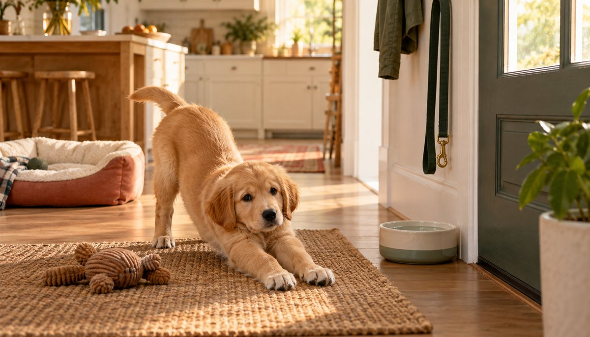

A Realistic Daily Schedule for a New Puppy

A useful puppy schedule is not a military timetable. It is a repeating sequence: potty, food or activity, potty again, then rest. Once you understand that loop, you can move the clock times around your household without losing the structure that helps a puppy settle in.
Researched by the CanMyPet Editorial Team · Published September 27, 2026 · Checked against the sources listed below.
Sample schedule for a young puppy
This example suits a household where someone is available during the day. Shift the times, but preserve the sequence.
The four anchors that matter most
1. Potty after every transition
“After” is easier to remember than an hourly alarm: after waking, after meals, after drinking, after play and after time in a crate or pen. Watch for sudden sniffing, circling, wandering away or stopping play. Accidents are information — they usually mean the interval was too long or a signal was missed.
2. Several short activity windows
Use brief play, sniffing and training sessions rather than trying to exhaust a puppy in one long block. Teach one tiny skill, stop while it is going well, and let the puppy rest. An overtired puppy often looks more chaotic, not more sleepy.
3. Predictable meals and fresh water
Follow the feeding amount and frequency recommended for the puppy's food and individual needs. The schedule should make meals predictable; it should not restrict normal access to fresh water. Ask your veterinarian if you are unsure about feeding frequency or growth.
4. Protected naps
Put rest on the calendar. A quiet sleep area prevents every family member from restarting play when the puppy is already tired. Children should know that a sleeping puppy is left alone.
What if everyone works outside the home?
A schedule cannot give a young puppy adult bladder control. Arrange a trusted person, sitter or walker to provide breaks appropriate to the puppy. If the absence is longer than the puppy can manage, discuss a safe pen setup and toileting plan with a qualified trainer. Do not rely on an all-day crate.
A practical workday plan might divide responsibility: one person handles the early routine, a midday helper covers potty and lunch, and the household protects an evening play-and-training window. Put the plan on the refrigerator so “I thought you did it” never becomes the puppy's problem.
How the schedule changes over time
As bladder control, confidence and attention grow, potty intervals can gradually lengthen, lunch may eventually disappear under the puppy's feeding plan, and activity windows can expand. Change one part at a time. If accidents return, shorten the interval again rather than treating it as defiance.
Frequently asked questions
Does every puppy need the same schedule?
No. Age, size, feeding plan, household and individual development all matter. Keep the sequence consistent and adjust the clock.
How long should puppy training sessions be?
Very short sessions are usually more productive. Try a few minutes, repeat later and finish while the puppy is still engaged.
Should I wake a sleeping puppy to stay on schedule?
Usually the schedule should protect sleep, not interrupt it. Be ready for a potty trip as soon as the puppy wakes.
Sources
- AKC — Setting schedules and developing a routine (updated October 2025)
- AKC — How to potty train a puppy
- AKC — How much do puppies sleep?
For general information only. Ask your veterinarian or a qualified trainer about your puppy's individual needs.